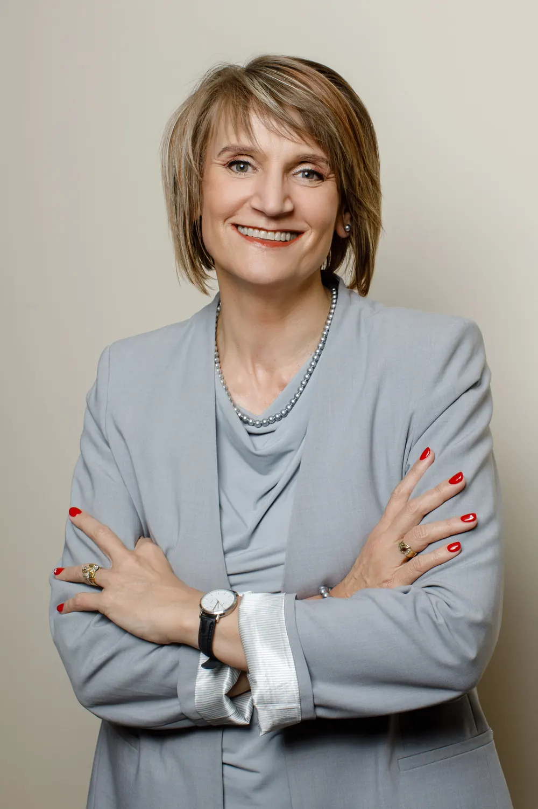

Working with leadership teams outside South Africa
Claudina Hafenscher is based in Johannesburg and works with executive and senior leadership teams across Africa, in Europe and beyond, both in person and online.

Claudina Hafenscher
COMENSA Accredited Senior Coach
Where the work starts: Diagnose Before You Fix™
CEOs and executive teams can often see that something isn’t working in the team, but not what is driving it. Claudina’s work starts there. Before recommending coaching, facilitation or training, she helps leaders understand the behaviour they are seeing. Then you decide together whether coaching, facilitation or training is the right next step.
What Claudina travels to deliver
- Executive and senior leadership team workshops
- Group coaching
- Facilitated leadership programmes
Individual coaching for leaders abroad can be arranged online.
Where she works
Claudina is particularly open to work across Southern Africa, the rest of Africa, the UK and Europe. Other destinations can be considered depending on the engagement and travel arrangements.
She has facilitated in person in Barcelona, Spain, and in Mauritius, and has worked with private coaching clients in Austria and the United States.
Examples of work outside South Africa
Barcelona, Spain: international conference, November 2013
At an international conference in Barcelona, Claudina facilitated a board-based simulation she helped design for the organiser’s facilitators and country managers. She took them through the exercise as learners would experience it, so they could see how it could help Grade 10 to 12 learners think through their choices after school.
Mauritius: women’s leadership retreat
Claudina facilitated leadership development sessions at an international retreat for a group of senior Nigerian women leaders. The retreat gave them time to step away from their day-to-day responsibilities and reflect on their leadership roles alongside peers.
Practical arrangements
| Question | How it works |
|---|---|
| In person or online? | Either. Team workshops, group coaching and leadership programmes can run on site. Individual coaching can be arranged online. |
| Travel costs | Flights and accommodation are agreed with you upfront and quoted separately from the professional fee. |
| Currency | Confirmed with you when the proposal is prepared. |
| Notice needed | Depends on the destination, availability and any visa or travel documents. Timing is confirmed once the location and proposed dates are known. |
| Licensed methods | For Reality Check® using EcoMetric™ or training that uses a licensed methodology such as Brain Gym®, availability is confirmed for the destination before committing. |
Common questions from teams outside South Africa
Can a South African coach work with our leadership team in another country?
Yes. Claudina travels to deliver executive and senior leadership team workshops, group coaching and facilitated leadership programmes, and runs sessions online when that suits the team better.
How do time zones work for online sessions?
South Africa runs on SAST (UTC+2) all year, with no daylight saving. That is the same as or up to two hours ahead of UK and central European time, so online sessions with teams there fit inside a normal working day.
Who pays for travel?
For in-person work abroad, flights and accommodation are agreed with you upfront and quoted separately from the professional fee.
Is Claudina accredited?
Claudina is a COMENSA Accredited Senior Coach. COMENSA (Coaches and Mentors of South Africa) is the professional body for coaches and mentors in South Africa. Read more about Claudina.
How to start an enquiry
Email or WhatsApp Claudina with your country and city, the size of the team, the dates you have in mind, and whether you want the work in person or online. She will reply with next steps and, once the details are clear, a proposal.
Talk about your team
Tell Claudina where your team is based and what you are seeing. She will help you work out what is driving it before recommending anything.